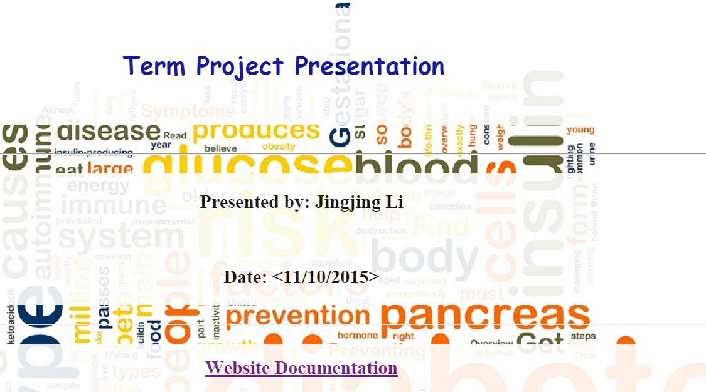
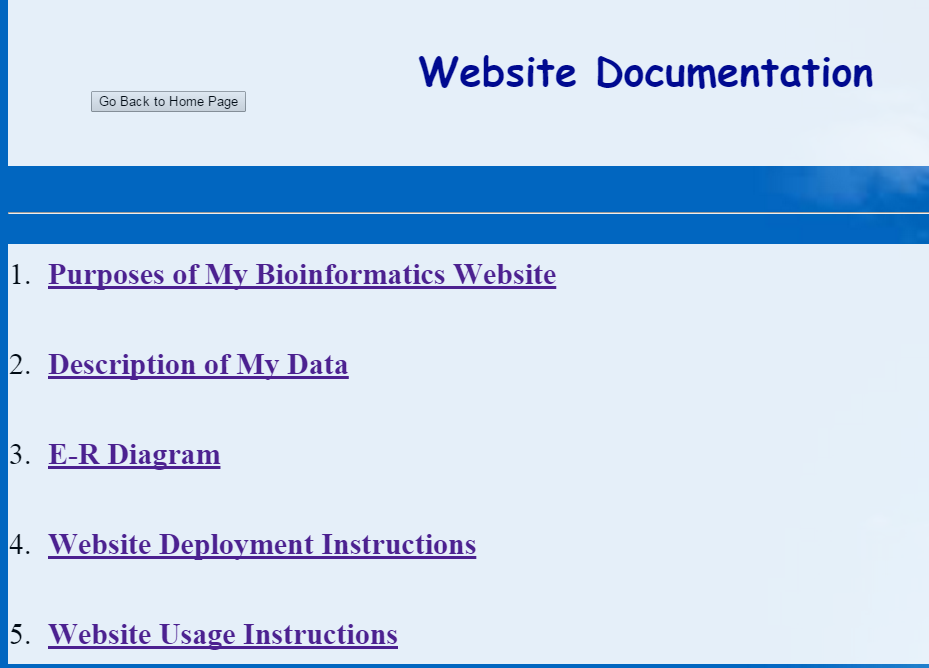

Since this page is opened in a separate window, there is no need to have a button to go back to the website documentation page.
Home page of our website: click a link to sub-page.  Sub-page of our website: click "Go Back to Home Page" to our website home page. 